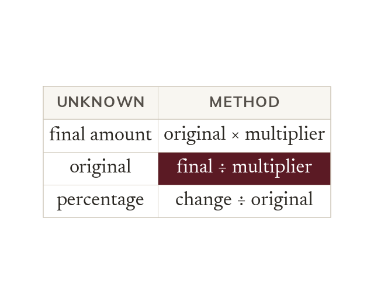

The unknown decides the method
Every percentage problem links an original, a multiplier and a final amount. The unknown one decides the method.
Every percentage problem links an original amount, a multiplier and a final amount. Which one is unknown decides whether to multiply or divide.